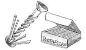
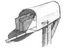
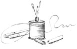
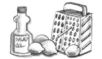
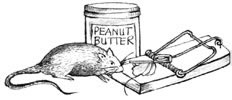
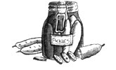
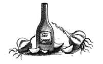
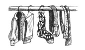
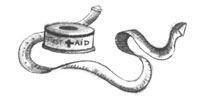

Through the years we've all discovered a few practical, time-tested solutions to the frustrating little problems of everyday life. Why not share your best ideas with the rest of MOTHER's readers? Send your suggestions to Country Lore, Mother Earth News, P.O. Box 70, Hendersonville, NC 28793. A one year subscription - or a one-year extension of an existing subscription - will be sent to each contributor whose tip is printed in this column.- MOTHER
I've found a way to deal with screws that have worked their way out of wood because the original hole is stripped or has become too large because of movement - in a hinge, for example, or on a chair leg. I simply tap one or two (or three!) toothpicks into the hole, secure them with glue if necessary, break them off flush with the wood's surface, and put the screw back in. This hasn't failed yet! - William Bachtel, Mishawaka, Indiana
My husband and I live in the country, but we commute daily to the city to work. It's usually dark when we get home, and our mailbox is quite a ways from the house. We placed a small penlight on the inside of the mailbox door, and now, with just a push of a button, we can see what's inside the box and make sure we don't drop any mail. - C. Edwards, Boyd, Texas
Quite often, after a crack in a metal tool or piece of equipment is repaired by welding, another crack will soon appear as an extension of the welded one. To avoid this the next time you make a similar repair, first drill a 1/8" or 1/2" hole at the end of the crack. Plug-weld the hole and then weld the crack itself. The undamaged metal will have no weak point to encourage further splitting. - Guy DeVault, Fort Collins, Colorado
Are you always losing needles in your sewing box? Just take the filter off a cigarette and insert it into the hole of a large spool of thread, empty or full. It's a perfect way to store those elusive needles. - Opal Farmer, Sonora, Mexico
An old and dear neighbor showed me how to deal with those pesky price tags and other adhesive labels that refuse to come unstuck. After peeling off what I easily can of the label, I gently rub the remainder with a dab of salad oil on a cloth. In a short time the residue is gone, and I've saved myself a lot of frustration. This works equally well on metal, enamel, glass, plastic, and vinyl. - Lori McGrath, Idaho Springs, Colorado
I use nylon string instead of a saw to cut PVC pipe. The nylon, such as monofilament fishing line, when pulled against the pipe in a seesaw fashion (using both hands, of course), produces enough friction to melt through PVC. By holding a piece of PVC down on the floor with one foot, I cut up through a 3/4" pipe in 17 seconds flat! - Matt Haight, Kissimmee, Florida
When grating foods, especially such clingables as cheese and lemon rind, rub a little salad oil on the grater first. After you're done, a few swipes with a toothbrush will release hidden particles, and you can easily and quickly wash the grater clean. - Fonda Hanifan, Fort Wayne, Indiana
Painted cement floors look great . . . until they start to peel! Before you tackle the job of painting - or repainting - them, try this: Pour a bottle of white vinegar in a bucket and brush on this acidic solution. When the floor dries, apply your paint in the usual manner . . . and it's far less likely to peel. This works on most metal surfaces, too. - Pat Bulish, Imperial, California
I've found that peanut butter works much better than cheese for luring mice to a trap. To make it harder for the little pests to steal the bait, I wrap about five inches of thread around and through a lump of creamy peanut butter before placing it in the mousetrap. My wife and I moved into a country house that had been vacant for a few years and was overrun with mice. After two weeks of trapping them with peanut butter, we no longer had a problem. - David Armbruster, Wheeling, West Virginia
Cleaning cooling coils under a refrigerator may help maintain your machine, but it's not easy: Those ground-level, recessed cooling lines are hard to reach! To make the job a breeze, tape one tip of a plastic straw in your vacuum cleaner's crevice attachment. The straw extends your reach and enables you to thoroughly clean the coils. - Joseph Kristoff, Orange City, Iowa
My husband and I love bread-and-butter pickles, so even though I always can several quarts of them every summer, we always run out in a few months. I finally solved our problem by reusing the juice! I slice up one or two fresh cucumbers, boil them about one minute in my leftover pickle juice, and then refrigerate juice and cukes. The flavor of these "recycled pickles" is quite satisfactory. - Mrs. William Fulton, Ash Fork, Arizona
The best way to keep mice (or rats) out of your house is to keep a pet hamster in a cage. It seems the two are natural enemies, so the wild rodents run for their lives when they smell your furry little pet. Our hamster, Spot, kept our house pest-free for four years, while our next-door neighbors were overrun with mice! - Laura butcher, Montague, California
I learned this cooking tip from my Japanese friends. I save garlic cloves in shoyu, or tamari soy sauce. I peel a head of garlic, place the cloves in a pint jar, and fill it with a good brand of natural shoyu. After a week, the garlic is mellowed by the sauce and can be used raw as an herbal remedy. It tastes better when cooked, too, with brown rice or vegetables. What's more, the clove-accented soy sauce is great in salad dressings, in stir-fried dishes, and on fresh or deep-fried tofu. - Anne Schein, Upper Lake, California
When my closet developed a musty odor, I bought a pound of cedar chips very inexpensively from a lumberyard. A cupful placed in an old nylon stocking and hung in the closet got rid of the smell and also served as an excellent moth repellent. - Eileen Dirkman, Green Bay, Wisconsin
I enjoy stripping and refinishing my own furniture, and recently discovered a way to extend the life and power of that costly stripping compound. After applying the goo to some wood, simply lay sheets of wax paper over the coated areas, pat them down so they stick, and let the whole mess sit for a half hour. When you pull the paper off, a lot more paint layers and stain will have been removed than otherwise-and with much less elbow grease! - Jann Springer, Harrisburg, PA
You can make a high-reach pruning saw with a keyhole saw blade and a broom handle (or an even longer pole). Hold the blade next to the end of the handle, mark where the blade's fastening holes lie on the wood, drill those spots, and fasten the two objects together with bolts, washers, and nuts. Now you can cut high tree limbs while standing on the ground. - Irene Burns, Punta Gorda, Florida
I like to keep a cloth tape measure handy, both for sewing and for other measuring around the house. But mine was always getting tangled. My solution? An empty firstaid tape tin. I keep the tape neatly rolled round the inner spool - clean and knot-free. - Diane Beaudoin, Andover, New Hampshire
ILLUSTRATIONS BY NAZAN AKYAVAS
|
 |
 |
 |
|
 |
 |
 |
|
 |
 |
 |